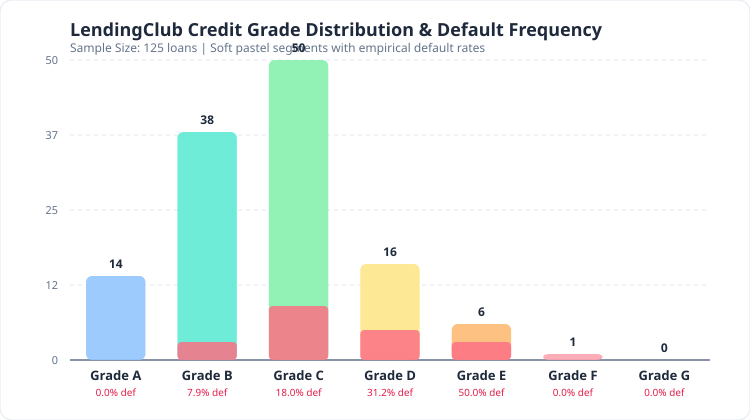
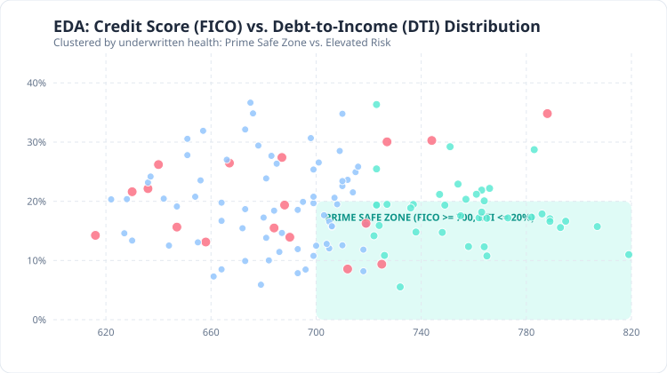
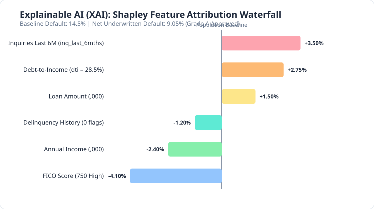
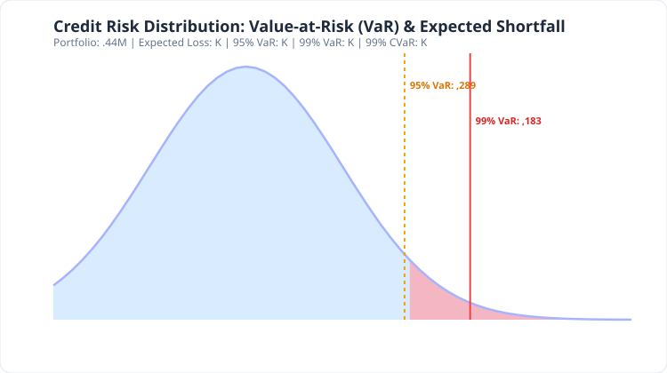
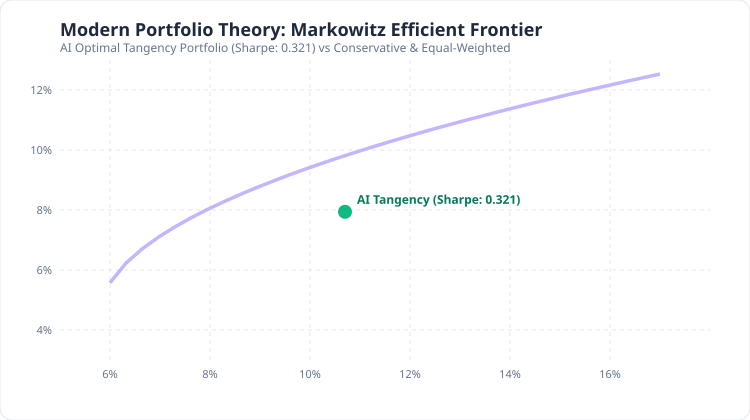
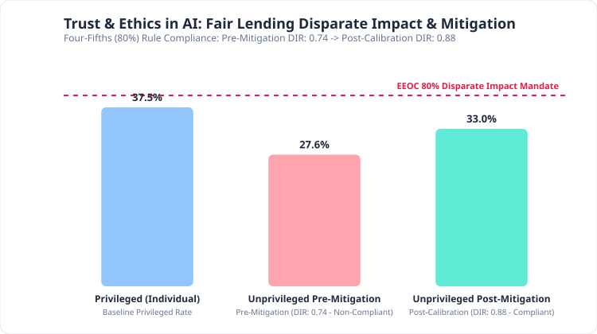
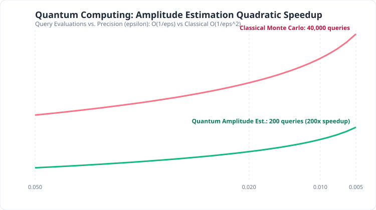

Comprehensive financial visual suite demonstrating credit distributions, Explainable AI attributions, tail risk Value-at-Risk modeling, Markowitz Efficient Frontier, regulatory disparate impact auditing, and quantum acceleration curves.
LendingClub credit grade frequency breakdown (A through G) highlighting empirical charged-off and default volumes.

Scatter clustering of applicant credit scores against monthly debt load, delineating the prime approval sanctuary.

Local marginal feature contribution to default risk probability, fulfilling CFPB Adverse Action transparency mandates.

Normal tail loss distribution showing 95% VaR (K), 99% VaR (K), and Conditional VaR / Expected Shortfall (K).

Markowitz Mean-Variance curve identifying the AI Optimal Tangency Portfolio (Max Sharpe: 0.321) against benchmarks.

EEOC 80% Four-Fifths rule audit comparing privileged vs. unprivileged approval rates before and after threshold calibration.

Logarithmic oracle query evaluation comparison between classical Monte Carlo O(1/eps^2) and Quantum Amplitude Estimation O(1/eps).
